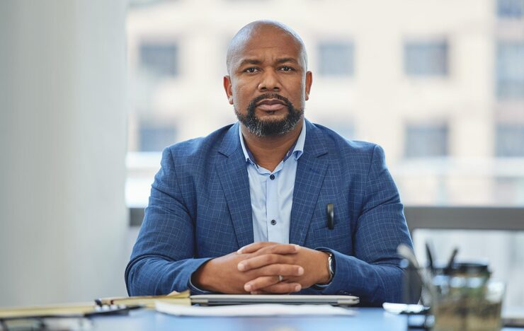
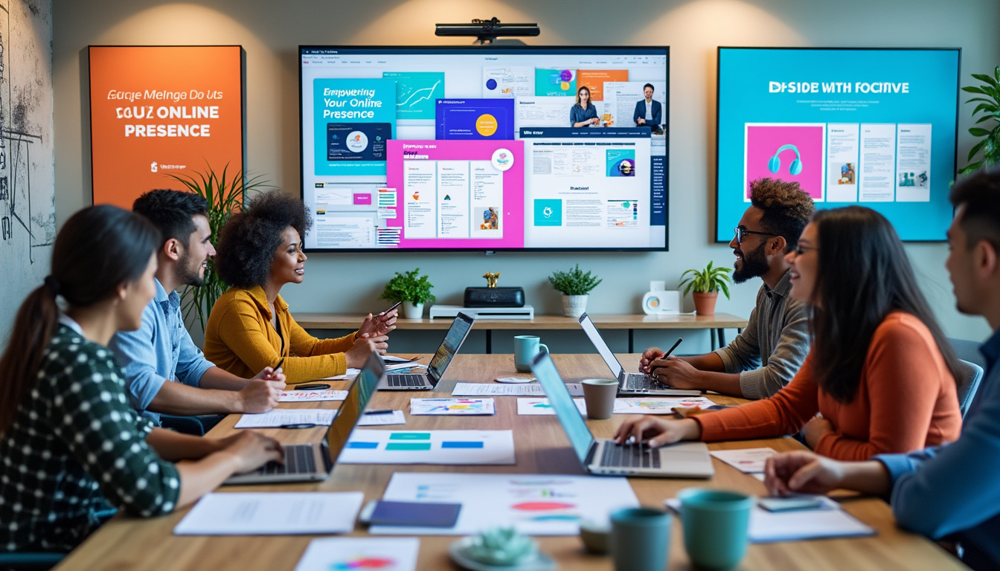

Boris Ndiaye
Fondatrice & CEO
Visionnaire et stratège, Fatou pilote le développement d'AfriTalent avec une ambition panafricaine.
Connecter l'intelligence africaine aux défis mondiaux.

Tout a commencé par un constat simple : l'Afrique regorge de talents numériques exceptionnels, mais ils manquent souvent de visibilité sur la scène internationale.
AfriTalent est né d'une volonté de briser les frontières et de permettre à chaque freelance africain de trouver des opportunités à la hauteur de son génie.
Créer un environnement de confiance où le paiement est sécurisé et où la qualité de l'expertise africaine est enfin reconnue à sa juste valeur.
Aujourd'hui, nous ne sommes pas seulement une plateforme, nous sommes une communauté qui propulse l'économie numérique du continent vers de nouveaux sommets.
Notre force réside dans la complémentarité de nos talents. Ensemble, nous travaillons pour faire d'AfriTalent la référence du freelancing en Afrique.

Fondatrice & CEO
Visionnaire et stratège, Fatou pilote le développement d'AfriTalent avec une ambition panafricaine.

Lead UX Designer
Elle veille à ce que l'expérience utilisateur soit fluide, moderne et accessible à tous.

Directeur Technique
Expert en architecture Cloud, il garantit la sécurité et la rapidité de la plateforme au quotidien.
Responsable Croissance
Spécialiste du marketing digital, il connecte les meilleures entreprises aux meilleurs talents.

Happiness Manager
Dédiée au succès des utilisateurs, elle accompagne freelances et clients dans chaque étape.
Directeur Opérationnel
Il supervise la logistique et les partenariats stratégiques pour assurer la pérennité du site.
Nous travaillons également avec un réseau de +20 consultants experts à travers tout le continent.
Nous intégrons les meilleures solutions technologiques pour moderniser le marché du travail en Afrique.
Notre plateforme est conçue pour être simple et accessible à tous, peu importe la connexion ou l'appareil.
Nous créons un écosystème où le partage de connaissances et l'entraide entre freelances sont prioritaires.
La rigueur est au cœur de nos processus pour garantir des résultats irréprochables à nos clients.
Nous bâtissons un écosystème de confiance pour propulser l'économie numérique en Afrique grâce à des processus rigoureux et un support de proximité.
Chaque freelance passe par un processus de sélection et des tests rigoureux avant d'intégrer notre réseau.
Vos fonds sont protégés en séquestre et libérés uniquement après la validation finale du travail livré.
Trouvez le bon profil en moins de 48h pour des missions courtes ou des collaborations à long terme.
La meilleure base de données de profils tech spécialisés, connectée aux réalités du continent.
Pas de frais cachés. Une tarification claire et honnête pour les entreprises et les freelances.
Un support local dédié et un suivi pour aider nos talents à monter en compétences continuellement.
Freelances Actifs sur la plateforme
Taux de Satisfaction
Pays Africains couverts
Projets réalisés avec succès
Que vous soyez un recruteur ou un talent, votre place est ici.
Commencer maintenant